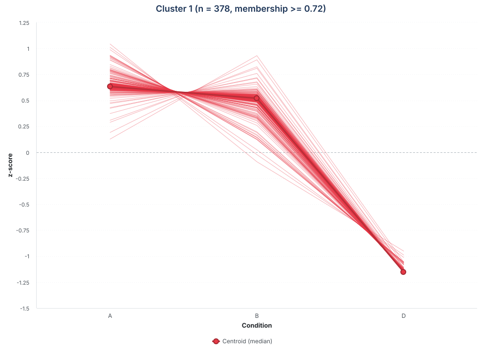
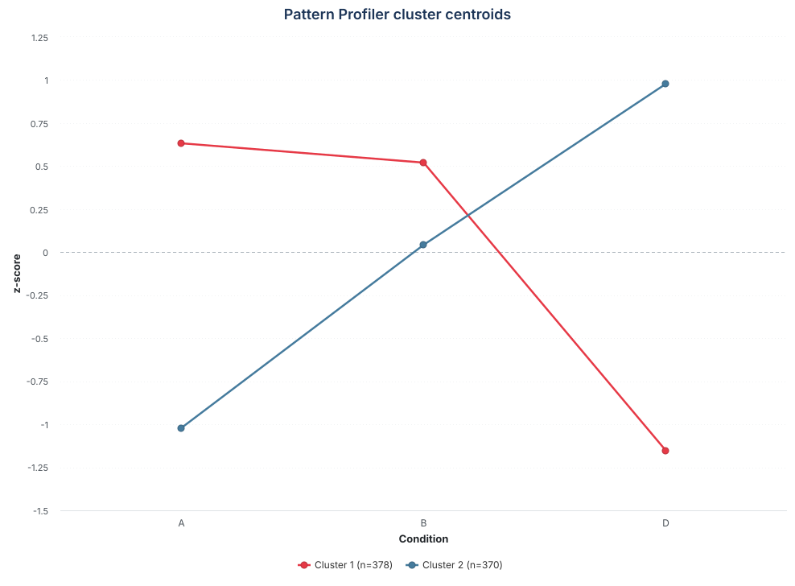

Pattern Profiler: identifying shared protein profiles
Sergio Ciordia
Source:vignettes/pattern-profiler.Rmd
pattern-profiler.RmdIntroduction
Differential-expression analysis identifies proteins that change between pairs of conditions. When an experiment contains three or more ordered conditions, Pattern Profiler addresses a complementary question: which proteins follow the same expression pattern across the complete experiment? Proteins that increase, decrease, peak, or recover together may participate in related biological processes even when their absolute abundances differ.
pattern_profiler_analysis() uses fuzzy c-means
clustering, implemented with the Mfuzz package (Kumar and
Futschik, 2007). Unlike hard clustering, fuzzy clustering does not force
every protein into a single group. Instead, it assigns a membership
value between 0 and 1 to every protein–cluster pair. High membership
indicates a clear match to a pattern, whereas intermediate membership
identifies proteins with more ambiguous profiles.
This vignette shows how to select proteins, choose the number of clusters, interpret memberships and expression profiles, and save the results for later use.
Setup and example data
Pattern Profiler is included in NADIA, while Mfuzz and
its clustering dependencies are optional. The following commands install
the required packages if they are not already available.
if (!requireNamespace("BiocManager", quietly = TRUE))
install.packages("BiocManager")
BiocManager::install(c("NADIA", "Mfuzz", "Biobase"))
install.packages("e1071")We use nadia_dia, the example DIA proteomics dataset
distributed with NADIA. The data are first processed to obtain both the
intensity assays and the differential-expression results required by
Pattern Profiler.
library(NADIA)
data(nadia_dia)
res <- process_proteomics(nadia_dia, verbose = FALSE)The processed experiment contains three ordered conditions
(A, B, and D), each represented
by four samples. Replicates are retained during protein quantification
and are aggregated only when the condition-level profiles are
constructed.
Show the code used to summarise the experimental design
design_table <- as.data.frame(SummarizedExperiment::colData(res$se_proc))
design_table <- as.data.frame(table(Condition = design_table$Condition))
names(design_table)[2] <- "Samples"
knitr::kable(
design_table,
caption = "Number of samples available for each condition."
)| Condition | Samples |
|---|---|
| A | 4 |
| B | 4 |
| D | 4 |
Pattern Profiler is most informative when the conditions have a meaningful order, such as time points, doses, or disease stages. With only two conditions, each profile contains a single transition and therefore provides little more information than the direction of the corresponding fold change.
Running Pattern Profiler
The function first selects proteins using the differential-expression table. For each selected protein, it then aggregates replicates within conditions, standardises the resulting profile, selects or accepts a number of clusters, and performs fuzzy c-means clustering. The example below evaluates two to five clusters and uses the Xie–Beni index to choose among them.
Arguments of pattern_profiler_analysis()
-
se_proc -
A processed
SummarizedExperimentcontaining the protein-intensity assays and sample metadata. -
DEPs_results -
The differential-expression table returned by
process_proteomics(). -
assay_name -
The assay used to build the profiles and to select the matching rows
from
DEPs_results. -
filter_mode,alpha, andcomparison -
Control which proteins enter the analysis. The modes are explained in
the next section;
comparisonis required only forfilter_mode = “specific”. -
condition_order - The order in which conditions appear in the profiles. If omitted, alphabetical order is used.
-
aggregate -
How replicates are summarised within each condition:
“median”(default) or“mean”. -
auto_select_c,c_range, andc -
Automatically evaluate candidate cluster numbers in
c_range, or set a fixedcwhenauto_select_c = FALSE. -
selection_method -
The rule used for automatic selection:
“xb”,“consensus”, or“elbow”. -
min_membership -
The minimum fuzzy membership required for a protein–cluster pair to be
included in
long_output(default:0.25). -
seedandseeds -
seedmakes the final clustering reproducible.seedssupplies repeated starts when candidate cluster numbers are evaluated. -
output_file -
An optional path for writing
long_outputas a Parquet file. Nothing is written when it isNULL. -
verbose - Controls progress messages.
pp <- pattern_profiler_analysis(
se_proc = res$se_proc,
DEPs_results = res$DEPs_results,
assay_name = "Impseqrob_min",
filter_mode = "any",
alpha = 0.05,
condition_order = c("A", "B", "D"),
aggregate = "median",
c_range = 2:5,
auto_select_c = TRUE,
selection_method = "xb",
min_membership = 0.25,
seed = 42,
seeds = c(42, 123, 456),
verbose = FALSE
)The returned object contains the chosen cluster number, the estimated
fuzzifier (m), selection diagnostics, the fitted
Mfuzz object, and a long-format table for inspection and
visualisation. The overview below confirms that all selected proteins
passed the preprocessing checks. The output contains more rows than
proteins because a protein can meet the membership threshold in more
than one cluster.
Show the code used to summarise the Pattern Profiler run
run_overview <- data.frame(
Measure = c(
"Proteins selected",
"Proteins clustered",
"Rows in long_output",
"Selected clusters",
"Fuzzifier (m)"
),
Value = c(
format(pp$n_features_input, scientific = FALSE),
format(pp$n_features_final, scientific = FALSE),
format(pp$n_rows_output, scientific = FALSE),
format(pp$optimal_c, scientific = FALSE),
format(round(pp$m, 3), nsmall = 3)
)
)
knitr::kable(
run_overview,
caption = "Overview of the Pattern Profiler run."
)| Measure | Value |
|---|---|
| Proteins selected | 794 |
| Proteins clustered | 794 |
| Rows in long_output | 867 |
| Selected clusters | 2 |
| Fuzzifier (m) | 3.818 |
Selecting proteins for clustering
Clustering every quantified protein can obscure biologically
responsive patterns with a large number of stable profiles.
filter_mode therefore lets the user define the protein set
before clustering.
| filter_mode | Proteins included |
|---|---|
"any" |
Proteins significant in at least one comparison at the
selected alpha. |
"specific" |
Proteins significant in the comparison supplied through
comparison. |
"all" |
All quantified proteins; no significance filter is applied. |
Important: filter_mode = “all” does not
mean “significant in every comparison”. It disables significance
filtering and includes every protein available in the selected
assay.
For this dataset, the three modes produce substantially different input sizes. The counts below are obtained before missing-value and variance checks are applied by Pattern Profiler.
Show the code used to compare the filtering strategies
dep_assay <- as.data.frame(res$DEPs_results)
dep_assay <- dep_assay[dep_assay$Assay == "Impseqrob_min", ]
filter_counts <- data.frame(
Setting = c(
'filter_mode = "any"',
'filter_mode = "specific", comparison = "B-A"',
'filter_mode = "all"'
),
Proteins = c(
length(unique(dep_assay$Protein.IDs[dep_assay$adj.P.Val <= 0.05])),
length(unique(dep_assay$Protein.IDs[
dep_assay$Comparison == "B-A" & dep_assay$adj.P.Val <= 0.05
])),
nrow(res$se_proc)
)
)
knitr::kable(
filter_counts,
caption = "Number of proteins selected by three filtering strategies."
)| Setting | Proteins |
|---|---|
| filter_mode = “any” | 794 |
| filter_mode = “specific”, comparison = “B-A” | 497 |
| filter_mode = “all” | 1997 |
The "any" mode retains 794 proteins that respond in at
least one comparison, whereas a "specific" analysis of
B-A would retain 497. The "all" mode would
include all 1,997 quantified proteins and is useful when coordinated
variation among non-significant proteins is also of interest, but it may
make the dominant clusters less specific to the biological response.
Choosing the number of clusters
The number of clusters determines the resolution of the analysis. Too
few clusters can merge distinct profiles, whereas too many can divide
one pattern into small, weakly supported groups. When
auto_select_c = TRUE, NADIA fits each candidate value in
c_range with multiple seeds and reports four complementary
diagnostics.
| Metric | What it evaluates | Preferred value |
|---|---|---|
| XB | Within-cluster compactness relative to separation between centroids. | Lower |
| FPC | How clearly proteins are assigned rather than shared among clusters. | Higher |
| AMM | Average maximum membership across proteins. | Higher |
| Dmin | Minimum distance between any two cluster centroids. | Higher |
The default selection_method = "xb" minimises the
Xie–Beni (XB) index. "consensus" combines the ranks of all
four diagnostics and can be useful when they disagree.
"elbow" selects the largest change in centroid separation
and should be treated as an exploratory alternative rather than as a
universal optimum.
Show the code used to prepare the cluster-selection diagnostics
| c | XB | XB_sd | FPC | AMM | Dmin |
|---|---|---|---|---|---|
| 2 | 0.0056 | 0.0000 | 0.8342 | 0.8973 | 2.6890 |
| 3 | 0.0391 | 0.0000 | 0.7171 | 0.8115 | 0.5446 |
| 4 | 0.0862 | 0.0000 | 0.6102 | 0.7305 | 0.2392 |
| 5 | 0.1267 | 0.1484 | 0.5509 | 0.6835 | 0.2019 |
All four diagnostics favour two clusters in this example:
c = 2 has the lowest XB value and the highest FPC, AMM, and
Dmin values. The selected solution therefore provides two well-separated
expression patterns without adding poorly supported subdivisions. These
metrics are guides rather than biological proof; candidate solutions
should still be checked visually and interpreted in the context of the
experiment.
Fuzzy c-means starts from a random partition. Keep seed
fixed for a reproducible final fit, and use several values in
seeds when selecting the number of clusters. Cluster
numbers are arbitrary labels and may be swapped between runs even when
the underlying patterns are equivalent.
Before clustering, NADIA removes profiles that cannot be standardised reliably, including constant profiles and features with excessive missingness. Remaining isolated missing values are filled by k-nearest-neighbour imputation. Failed candidate fits are stored as missing diagnostic values rather than as zeros, so they cannot be mistaken for exceptionally good solutions.
Understanding the soft-clustering output
The main result is long_output. It contains the protein
identifier, cluster, membership, and one standardised value for each
condition. Because expression is converted to a row-wise z-score, these
values describe the relative profile of each protein across the
ordered conditions; they must not be interpreted as absolute
protein abundance.
Show the code used to preview the long-format output
| FeatureID | Cluster | Membership | A | B | D |
|---|---|---|---|---|---|
| P32610 | 1 | 0.974 | 0.638 | 0.514 | -1.152 |
| P21375 | 1 | 0.974 | 0.638 | 0.514 | -1.152 |
| Q04182 | 1 | 0.974 | 0.639 | 0.514 | -1.152 |
| P21147 | 1 | 0.974 | 0.638 | 0.514 | -1.152 |
| Q01476 | 1 | 0.974 | 0.638 | 0.514 | -1.152 |
| P36090 | 1 | 0.974 | 0.639 | 0.514 | -1.152 |
Each row represents one protein–cluster association that satisfies
min_membership. summarize_pattern_profiler()
provides an overview of these associations and reports how many proteins
occur in more than one cluster.
Show the code used to summarise soft-clustering assignments
pp_summary <- summarize_pattern_profiler(pp$long_output)
membership_overview <- data.frame(
Measure = c(
"Unique proteins",
"Protein--cluster associations",
"Proteins associated with multiple clusters"
),
Value = c(
pp_summary$n_unique_features,
pp_summary$n_total_entries,
pp_summary$n_multi_cluster_features
)
)
knitr::kable(
membership_overview,
caption = "Summary of the soft-clustering assignments."
)| Measure | Value |
|---|---|
| Unique proteins | 794 |
| Protein–cluster associations | 867 |
| Proteins associated with multiple clusters | 73 |
At the analysis threshold of 0.25, 73 proteins are associated with both clusters. These overlapping assignments are not duplicates or errors: they identify profiles that share characteristics with both centroids. The cluster summary shows the size and strength of each set of assignments.
Show the code used to summarise cluster membership
cluster_table <- as.data.frame(pp_summary$cluster_summary)
cluster_table[c("mean_membership", "min_membership", "max_membership")] <-
lapply(
cluster_table[c("mean_membership", "min_membership", "max_membership")],
round,
digits = 3
)
knitr::kable(
cluster_table,
caption = "Membership summary for each cluster."
)| Cluster | n_entries | n_unique_features | mean_membership | min_membership | max_membership |
|---|---|---|---|---|---|
| 1 | 446 | 446 | 0.865 | 0.252 | 0.974 |
| 2 | 421 | 421 | 0.835 | 0.254 | 0.964 |
Both clusters have high average memberships, indicating that the two-pattern solution is well defined overall. A stricter display threshold can be used when only the clearest representatives are needed.
Show the code used to compare membership thresholds
thresholds <- c(0.25, 0.50, 0.70, 0.90)
threshold_table <- data.frame(
Minimum_membership = thresholds,
Associations_retained = vapply(
thresholds,
function(x) sum(pp$long_output$Membership >= x),
numeric(1)
)
)
knitr::kable(
threshold_table,
caption = "Effect of applying stricter membership thresholds."
)| Minimum_membership | Associations_retained |
|---|---|
| 0.25 | 867 |
| 0.50 | 794 |
| 0.70 | 748 |
| 0.90 | 554 |
Raising the threshold from 0.25 to 0.50 removes low-confidence secondary associations while retaining one best-supported assignment for every protein in this two-cluster solution. At 0.90, only 554 highly characteristic associations remain. The appropriate threshold depends on whether the aim is broad discovery or a conservative list for downstream interpretation.
The threshold supplied to pattern_profiler_analysis()
determines which rows are retained in long_output. Plotting
functions can apply an additional, stricter threshold, but they cannot
recover associations that were removed during the analysis.
Visualising the expression patterns
Visualisation connects the numerical memberships to their biological meaning. NADIA provides interactive Highcharts plots for inspecting all protein profiles within individual clusters and for comparing cluster centroids.
Protein profiles within each cluster
cluster_profile_highchart_list() creates one interactive
figure per cluster. Individual protein lines reveal within-cluster
heterogeneity, while the centroid summarises the dominant pattern. Here,
a membership threshold of 0.70 is used as a conservative starting point
for displaying reliable cluster profiles.
profile_plots <- cluster_profile_highchart_list(
pp$long_output,
conditions = pp$conditions,
min_membership = 0.70,
centroid_summary = "median"
)
profile_plots[[1]]The first cluster is shown below. Its interactive Highcharts object was exported as SVG so that the figure remains compact and can be enlarged without losing quality.

The thin red lines represent the 378 individual protein profiles
retained at this threshold, and the thick dark-red line is their median
centroid. Most proteins remain relatively stable between A
and B and then decrease in D. Their
concentration around the centroid indicates a coherent cluster
pattern.
The live object is best generated in the R session, because hundreds
of interactive series would make the installed vignette unnecessarily
large. See vignette("visualization") for additional
guidance on interactive figures.
Comparing cluster centroids
The centroid plot provides a compact overview of the patterns. Here the median profile is used because it is less sensitive than the mean to proteins at the edges of a cluster. The same membership threshold of 0.70 is applied so that this summary and the cluster-level figure above represent the same protein assignments.
centroid_plot <- cluster_centroids_highchart(
pp$long_output,
conditions = pp$conditions,
min_membership = 0.70,
centroid_summary = "median",
title = "Pattern Profiler cluster centroids"
)
centroid_plotThe exported SVG retains the appearance of the interactive Highcharts object without embedding its JavaScript libraries in the vignette.

The centroids summarise 378 proteins in cluster 1 and 370 in cluster
2. Cluster 1 remains high in A and B before
decreasing in D, whereas cluster 2 rises from
A to D. These opposing trajectories are
expressed as within-protein z-scores and therefore describe relative
patterns rather than absolute abundances.
Saving and reusing the results
Pattern Profiler results can be saved either as a standalone Parquet table or inside a NADIA project. Both approaches avoid repeating the clustering when the profiles need to be inspected or plotted again.
Saving the long-format table as Parquet
Set output_file when running the analysis to write
long_output directly. Use the .parquet
extension because the function writes a Parquet file.
parquet_file <- file.path(tempdir(), "pattern_profiler.parquet")
invisible(capture.output(pattern_profiler_analysis(
se_proc = res$se_proc,
DEPs_results = res$DEPs_results,
assay_name = "Impseqrob_min",
filter_mode = "any",
condition_order = c("A", "B", "D"),
auto_select_c = FALSE,
c = pp$optimal_c,
min_membership = 0.25,
seed = 42,
output_file = parquet_file,
verbose = FALSE
)))
reloaded <- read_pattern_profiler_data(
parquet_file,
min_membership = 0.70
)
data.frame(
Rows_saved = nrow(pp$long_output),
Rows_reloaded_at_0.70 = nrow(reloaded)
)
#> Rows_saved Rows_reloaded_at_0.70
#> 1 867 748
unlink(parquet_file)read_pattern_profiler_data() validates the required
columns and can apply a stricter membership threshold while loading the
file. In this example, the saved table contains all associations at
0.25, whereas the reloaded object keeps only those at or above 0.70.
This stricter filter retains 748 of the 867 saved protein–cluster
associations.
Storing Pattern Profiler in a NADIA project
A .nadia project can store the preprocessing,
differential-expression analysis, and Pattern Profiler result together.
This is convenient when the complete analysis must be transferred or
reopened as one reproducible object.
project_file <- file.path(tempdir(), "pattern_profiler_example.nadia")
write_nadia(
project_file,
preprocessing = nadia_dia,
result = res,
verbose = FALSE
)
nadia_add_pattern_profiler(
project_file,
pattern_profiler = pp,
verbose = FALSE
)
stored_project <- read_nadia(project_file)
stored_profiles <- nadia_pattern_profiler(stored_project)
data.frame(
Rows_original = nrow(pp$long_output),
Rows_recovered = nrow(stored_profiles)
)
#> Rows_original Rows_recovered
#> 1 867 867
unlink(c(project_file, paste0(project_file, ".wal")))The matching row counts confirm that the complete long-format
clustering table was recovered. Alternatively,
pattern_profiler = pp can be supplied directly to
write_nadia() when the project and clustering are saved at
the same time.
To combine Pattern Profiler assignments with differential-abundance
statistics in a single table, for example as input to a downstream
functional or enrichment analysis, use deps_with_clusters()
on the two results in memory or nadia_deps_with_clusters()
on a stored project. Both functions are described in
vignette("results-and-export", package = "NADIA").
Practical recommendations
Pattern Profiler is most useful as an exploratory layer after a well-controlled differential-expression analysis. The following practices make the results easier to reproduce and interpret:
- provide an explicit
condition_orderthat reflects the experimental design; - begin with
filter_mode = "any", then broaden or restrict the protein set to answer a specific biological question; - inspect all cluster-selection diagnostics rather than treating one index as definitive;
- keep random seeds fixed and check that the main profiles remain stable across plausible cluster numbers;
- use membership to distinguish representative proteins from ambiguous ones;
- interpret standardised trajectories as relative shapes, not abundance differences; and
- perform pathway or functional enrichment only after verifying that the corresponding cluster is coherent and biologically interpretable.
With three or more ordered conditions, this workflow complements pairwise differential expression by revealing groups of proteins that share a response across the experiment. It does not establish regulation or causality by itself, but it provides focused protein sets for subsequent biological validation.
References
Kumar L, Futschik ME (2007). “Mfuzz: a software package for soft clustering of microarray data.” Bioinformation, 2(1), 5–7.
Session information
The package versions used to build this vignette are recorded below to support reproducibility.
sessionInfo()
#> R version 4.6.1 (2026-06-24)
#> Platform: x86_64-pc-linux-gnu
#> Running under: Ubuntu 24.04.4 LTS
#>
#> Matrix products: default
#> BLAS: /usr/lib/x86_64-linux-gnu/openblas-pthread/libblas.so.3
#> LAPACK: /usr/lib/x86_64-linux-gnu/openblas-pthread/libopenblasp-r0.3.26.so; LAPACK version 3.12.0
#>
#> locale:
#> [1] LC_CTYPE=C.UTF-8 LC_NUMERIC=C LC_TIME=C.UTF-8
#> [4] LC_COLLATE=C.UTF-8 LC_MONETARY=C.UTF-8 LC_MESSAGES=C.UTF-8
#> [7] LC_PAPER=C.UTF-8 LC_NAME=C LC_ADDRESS=C
#> [10] LC_TELEPHONE=C LC_MEASUREMENT=C.UTF-8 LC_IDENTIFICATION=C
#>
#> time zone: UTC
#> tzcode source: system (glibc)
#>
#> attached base packages:
#> [1] tcltk stats graphics grDevices utils datasets methods
#> [8] base
#>
#> other attached packages:
#> [1] NADIA_0.99.0 DynDoc_1.90.0 widgetTools_1.90.0 BiocStyle_2.40.0
#>
#> loaded via a namespace (and not attached):
#> [1] tidyselect_1.2.1 rrcovNA_0.5-3
#> [3] dplyr_1.2.1 arrow_25.0.1
#> [5] fastmap_1.2.0 duckdb_1.5.5
#> [7] digest_0.6.39 timechange_0.4.0
#> [9] lifecycle_1.0.5 Mfuzz_2.72.0
#> [11] cluster_2.1.8.2 statmod_1.5.2
#> [13] magrittr_2.0.5 compiler_4.6.1
#> [15] rlang_1.3.0 tkWidgets_1.90.0
#> [17] sass_0.4.10 tools_4.6.1
#> [19] yaml_2.3.12 data.table_1.18.6.1
#> [21] knitr_1.51 rrcov_1.7-7
#> [23] S4Arrays_1.12.0 htmlwidgets_1.6.4
#> [25] bit_4.6.0 curl_8.0.0
#> [27] DelayedArray_0.38.2 TTR_0.24.4
#> [29] abind_1.4-8 norm_1.0-11.1
#> [31] withr_3.0.3 purrr_1.2.2
#> [33] BiocGenerics_0.58.1 desc_1.4.3
#> [35] grid_4.6.1 pcaPP_2.0-5
#> [37] stats4_4.6.1 xts_0.14.2
#> [39] e1071_1.7-17 SummarizedExperiment_1.42.0
#> [41] cli_3.6.6 mvtnorm_1.4-2
#> [43] rmarkdown_2.32 ragg_1.5.2
#> [45] generics_0.1.4 otel_0.2.0
#> [47] rlist_0.4.6.2 robustbase_0.99-7
#> [49] DBI_1.3.0 cachem_1.1.0
#> [51] proxy_0.4-29 stringr_1.6.0
#> [53] splines_4.6.1 assertthat_0.2.1
#> [55] BiocManager_1.30.27 XVector_0.52.0
#> [57] matrixStats_1.5.0 vctrs_0.7.3
#> [59] Matrix_1.7-5 jsonlite_2.0.0
#> [61] bookdown_0.48 IRanges_2.46.0
#> [63] S4Vectors_0.50.2 bit64_4.8.6
#> [65] systemfonts_1.3.2 limma_3.68.5
#> [67] tidyr_1.3.2 jquerylib_0.1.4
#> [69] quantmod_0.4.29 glue_1.8.1
#> [71] pkgdown_2.2.1 DEoptimR_1.2-1
#> [73] lubridate_1.9.5 stringi_1.8.9
#> [75] GenomicRanges_1.64.0 tibble_3.3.1
#> [77] pillar_1.11.1 htmltools_0.5.9
#> [79] Seqinfo_1.2.0 reactable_0.4.5
#> [81] R6_2.6.1 textshaping_1.0.5
#> [83] evaluate_1.0.5 lattice_0.22-9
#> [85] Biobase_2.72.0 backports_1.5.1
#> [87] broom_1.0.13 bslib_0.12.0
#> [89] class_7.3-23 SparseArray_1.12.2
#> [91] highcharter_0.9.5 xfun_0.60
#> [93] fs_2.1.0 MatrixGenerics_1.24.0
#> [95] zoo_1.9-0 pkgconfig_2.0.3